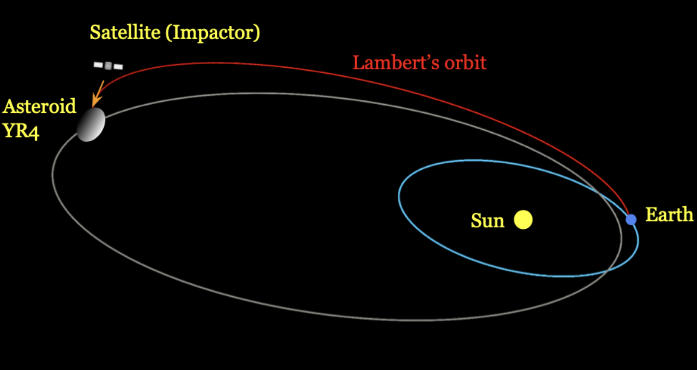

| Homepage | Research | Projects |
My main work in this year covered analyzing and investigating asteroids using computational N-body simulations using various frameworks, and analyzing the effect of kinetic impacts on the bodies. Beginning this work, I began by creating the N-body framework (which is a code that is used for simulations in the project section, made over a few years). In the tests for this project, I wanted to see how different effects play into the model. One effect that intrigued me was general relativity, because it is the true means by which gravitation arises. While I had already implemented Newtonian gravity as part of my earlier simulations, I wanted to understand the impact of general relativity on the problem. To achieve this, using the N-body framework, I realized I could use a method, similar to Newtonian, where the approximate force can be found. I did this using the Einstein Infeld Hoffmann equations, which approximate general relativistic effects using a series of terms. The issue with this was that it was incredibly slow, because of its O(n^3) time complexity, which made simulating with it very slow. However, I still wanted to see how relevant it was. To test it, I wanted to see if it correctly finds the most famous result of general relativity, the precession of Mercury. Though difficult, I was able to first find perihelions in the orbit, and observe how quickly they turn relative to the Sun. In this way, using a 40 hour simulation, my model correctly predicted the precession of Mercury as 574 arcseconds per Julian century to within an arcsecond, which is corrected from the result of 532 arcseconds per Julian century by Newtonian gravity. Now, after this, I chose to analyze the asteroid, 2024 YR4, due to its relevance at the time, with its potential collision with Earth. Using JPL Horizons Ephemeris data for initial conditions, I analyzed the resultant approach using my different methods. In my tests, I found that the effects of general relativity were negligible for analyzing the motion of 2024 YR4. Additionally, I wanted to test how important the gravitational impacts of different planets are on the motion. I saw that this caused significant deviations from the accurate result, especially when Jupiter was excluded. With this, I set out to analyze the motion of 2024 YR4, and kinetic impacts. I learned that this impact is largely affected by ejectiles, defined by a coefficient B. With this, I used an impulse at different locations, angles, and speeds, to analyze the effect on miss distance. I found that kinetic impacts far from the location of impact were the most effective, and that earlier impacts were also more successful. I also found that impacts parallel to the direction of motion, at high speeds, were the most effective at deflection.
